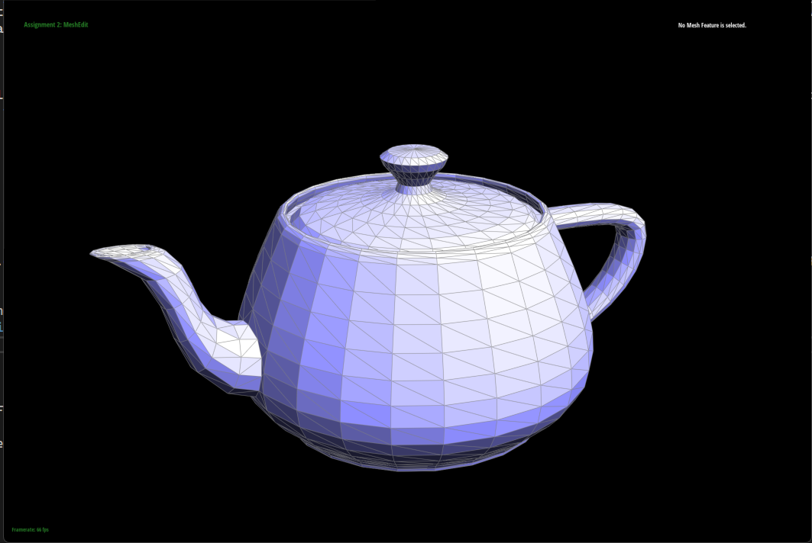
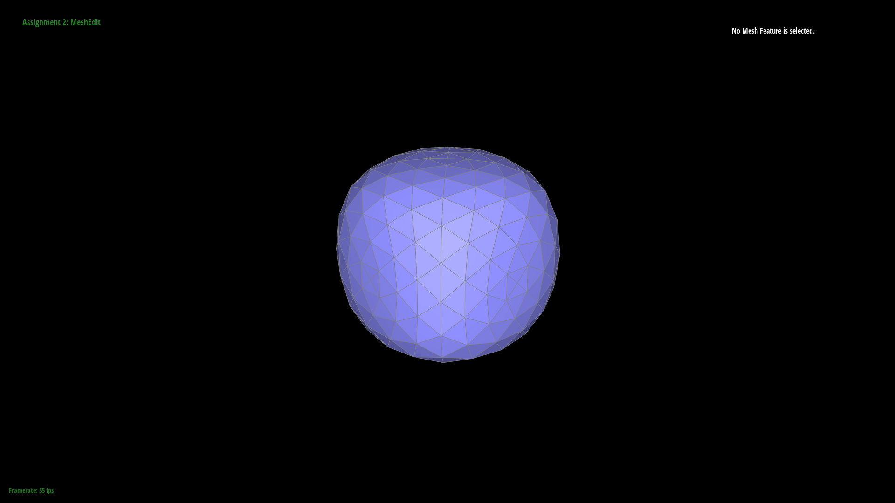

In this project, we built the Bezier curves, and from there we extend to build Bezier surfaces using the de Casteljau algorithm. Then, we worked with the teapot. We manipulated triangle meshes, to enable Phong shadowing, edge flips, edge splits, and loop subdivision for mesh upsampling. These different functions allowed us to render a more elaborate, real-looking teapot.
Section I: Bezier Curves and Surfaces
Part 1: Bezier Curves with 1D de Casteljau Subdivision
The De Casteljau algorithm is a technique used to calculate the location of a point on a bezier curve.
The curve is defined by a parameter t, which can take values between 0 and 1. By starting with a list of n control points, we determined the positions on the bezier curve by repeatedly performing linear interpolations between the points.
At each step, we evaluated each line segment (connecting updated, consecutive points) at a fractional distance t along its "edge" length. This process can be defined mathematically as a recursive step where the new set of coordinate points is of length n-1.
The image sequence below demonstrates the De Casteljau algorithm applied to a list of six points as it progresses towards a single point on the Bezier curve for a specific value of t.
The green line represents the true Bezier curve and serves as a reference. The blue line segments denotes the linear interpolations performed at each step from subdivision levels 1-5.
Fig 1: Bezier Curve with 6 control points.
Fig 2: De Casteljau Level 1 Subdivision.
Fig 3: De Casteljau Level 2 Subdivision.
Fig 4: De Casteljau Level 3 Subdivision.
Fig 5: De Casteljau Level 4 Subdivision.
Fig 6: De Casteljau Level 5 Subdivision.
Fig 7: Perturbed Bezier Curve with new t value.
Part 2: Bezier Surfaces with Separable 1D de Casteljau
The 1D De Casteljau Algorithm can be extended naturally to 2D Bezier surfaces. To do so, we need to define the surface using a collection of 1D Bezier curves.
We begin with m Bezier curves in 3D space, each defined by n control points and parameterized by a scalar u. Using these curves, we can define a Bezier surface as the set of points obtained by "sliding" a Bezier curve g_u(v) parametrized by v through the control points for a fixed value of u.
By varying u, we obtain a function of two coordinates: g(u,v). To evaluate a point g(u,v) on such a surface using the De Casteljau algorithm, we use a function that takes in an m x n 2D vector of control points and the parametric coordinates (u,v). We first apply the 1D De Casteljau algorithm described in Part 1 along the rows of the 2D vector, resulting in m Bezier curves evaluated at u.
We then use these m points to evaluate the "sliding" Bezier curve at v using the 1-D De Casteljau algorithm again. The image below demonstrates how complex geometries (such as hard edges, beveled surfaces, and discontinuities) can be created with a patchwork of Bezier surfaces.
Fig 8: Teapot detailed with Bezier Surfaces.
Section II: Triangle Meshes and Half-Edge Data Structure
Part 3: Area-Weighted Vertex Normals
We implemented the area-weight vertex normals by following these steps:
Find an outgoing half-edge of the vertex, and create an empty ArrayList to store the vertices' information we need to compute the normal. Push the current vertex to the ArrayList. Also initialize an
vector initialized to all zeros to store the accumulated normals.
Starting from this half-edge, iterate over all the faces adjacent to the vertex. The specific way we implemented this: we sequentially iterate over all the twins of the half-edge starting at vertex,
using the next of h_twin to get to the next half edge to work with. This allows us to ensure that we are essentially iterating over all the triangle faces. For each iteration, we store the vertex position
of h_twin to our arraylist, and whenever we get to three vertices in the array, we compute the normal vector of the face by taking the cross product of the two sides if the triangle joint by the target
vertex. We then add the computed normal vector to normals. After that, we remove the second vertex from the ArrayList (the first vertex is target vertex so keep, the last vertex was just added inside, and
would be composing part of the next face).
Eventually, we normalize the accumulated normals: divide it by its norm. This would work because when we add the normals, we directly added the cross products of the two sides of the triangle, whose
norm is proportional to the area of the face. (-> This helps to ensure that the weights are proportional to the area of the face)

Fig 9: Default Shading.
Fig 10: Phong Shading.
Part 4: Edge Flip
The way we implemented the edge flip:
First, we checked to see if either of the neighboring faces of the edge is on a boundary loop, if so, immediately return the function.
Second, we drew a graph on paper labeling all the edges, half edges, vertices, and faces before and after the edge flip. Then, relying on the graph before the edge flip, we wrote the code to identify (name) all the half edges (using e0, next and twin), vertices, edges, and faces (all of these relying on pointers from the half edges) involved.
Third, we reassigned each of the elements involved in the flip. For each vertex, face, and edge, we reassigned its half edge pointer so as to correspond to the new graph after the edge flip. Eventually, we set the next, twin, vertex, edge, and face of each half edge’s pointer to the corresponding elements.
Lastly, we rendered the teapot and tested the flip operation on multiple different edges to make sure that our method works properly as expected.
The debugging trick we used was to match each line of code with the graph we drew on the paper, and make sure that the correspondence indeed holds (checked to make sure there's no typos). We didn’t have any special implementations. We just followed the suggestions from the project spec.
Fig 11: Before Flip.
Fig 12: After Flip.
Debugging journey:
At first, we considered only the pointers on the flipped edge, and not the other 4 edges. Thus, our teapot had some “holes” after the edge flip. We later realized that we should consider all the involved edges instead of only the given “flipping edge”.
Also, initially, we tried to think in our head what changed and what didn’t. And tried to identify/reassign only the elements which “we think” should be modified. However, later, we found that to be very inefficient, and later when we instead took all involved elements into consideration (identify and reassign all of the elements), we soon found this to be a much better way of solving this problem.
Part 5: Edge Split
The way we implemented the edge split:
Our implementation process for part 5 is somewhat similar to that of part 4:
First, we labeled the graphs on paper to make sure we understand what needs to be added/modified.
Second, we identified all the half edges, vertices, edges, and faces involved in the original graph.
Third, we created the new elements involved in the split operation: one vertex m (also initializes the position of the vertex to be the midpoint of b, c, vertex of the target split edge), 2 new faces, 3 new edges, and 6 new half edges.
Fourth, we reassigned all the halfedge pointers of vertices, faces, and edges. And we also reassigned all of the next, twin, vertex, edge, and face pointer of the half edges.
Lastly, we rendered the teapot and tested the split operation on multiple different edges to make sure that our method works properly as expected.
Building on previous experiences, the process turned out to be quite smooth. We didn’t rely on any special implementation/debugging tricks other than keeping the elements in order, and write clear documentations to make sure that the code is easy to read and understand.
Screenshot of a mesh before and after edge splits:
Fig 13: Before Split.
Fig 14: After Split.
Screenshot of a mesh before and after a mixture of edge flips and splits:
Fig 15: Before Split & Flip.
Fig 16: After Split & Flip.
Screenshot of EC - Split of a boundary edge:
Fig 17: Boundary Edge Before Split (EC).
Fig 18: Boundary Edge After Split (EC).
Part 6: Loop Subdivision for Mesh Upsampling
How we implemented Loop Subdivision + Debugging journey:
As per the project specifications, we began by preprocessing the weighted vertex locations for both the old and new vertices in the target mesh. To store the new locations of the old vertices, we used the newPosition field of the vertices themselves.
However for storing the locations of the new vertices, we had to be a bit nuanced as they had not yet been created. Ultimately, we stored them in the newPosition field of the old mesh edges. This way they would still be accessible after edge-splits and would be incident to the new vertices.
Next, we looped through all the old edges of the mesh and divided them using the edge-split operation. While working on this, we faced some challenges with infinite loops caused by appending new edges to the mesh. It took some time to get the proper conditions set for splitting an edge (i.e. asserting that none of the vertices at the end of the edge were new).
It then took some time to understand that 4-1 triangle subdivision could only be achieved by carefully selecting which edges to flip. Once we understood the conditions for flipping an edge, we updated the edge-split subroutine to set the isNew field to true only for the new edges that bisected the original edge.
Finally, we repositioned each vertex using the preprocessed locations identified at the beginning.
Fig 19: Cow - 1x Upsample.
Fig 20: Cow - 4x Upsample.
Fig 21: Cow - 16x Upsample.
Fig 22: Cow - 64x Upsample.
What happens to sharp corners and edges after Loop Subdivision? Can we reduce this effect by pre-splitting some edges?
Loop subdivision involves repositioning vertices to make a more uniformly sampled mesh, which tends to round sharp edges. We can think of sharp edges as high-frequency 3D content in the mesh. By enforcing mesh uniformity (i.e. making the spacing between vertices roughly consistent), we are effectively imposing a Nyquist sampling frequency.
Thus loop subdivision bevels sharp edges and tends to produce the greatest quadric error after the first iteration. The images of the icosahedron below demonstrate this effect.
Pre-splitting can also reduce this effect by creating additional vertices at specific points along the original edges, giving more control over the resulting geometry. This allows us to create a more natural and smooth transition between the original geometry and the beveled edges.
Additionally, pre-splitting edges can prevent the creation of unwanted or unexpected geometry, such as non-manifold edges or intersecting faces.
Fig 23: Icosahedron - 1x Upsample.
Fig 24: Icosahedron - 4x Upsample.
Fig 25: Icosahedron - 16x Upsample.
Fig 26: Icosahedron - 64x Upsample.
Can we pre-process the cube with edge flips and splits so that it subdivides symmetrically? Why does this pre-processing help alleviate the error?
Comparing the image sequences below, we can see that upsampling a cube using loop subdivision leads to two different results: one asymmetric and the other symmetric.
This distinction can be attributed to the starting topology of the cube for either case. In the first column, where the cube geometry converges to an asymmetric convex body, there are merely two triangles per face of the cube and two rotationally symmetric configurations over each Cartesian axis. On the other hand in the second column with pre-processed edge splits, where the cube geometry converges to a more symmetric convex body, there are four triangles per cube face and four rotationally symmetric configurations over each Cartesian axis.
As previously discussed, a single iteration of loop subdivision produces serious quadric errors for shapes that are undersampled since upsampling the mesh effectively high-pass filters the mesh. Thus, since the symmetric cube topology contains more samples than the asymmetric cube topology, and since all the faces of the symmetric cube are identical, upsampling converges to an object that is more cube-like.
Fig 27: Asymmetric Cube - 1x Upsample.
Fig 28: Symmetric Cube - 1x Upsample.
Fig 29: Asymmetric Cube - 4x Upsample.
Fig 30: Symmetric Cube - 4x Upsample.
Fig 31: Asymmetric Cube - 16x Upsample.

Fig 32: Symmetric Cube - 16x Upsample.
Fig 33: Asymmetric Cube - 64x Upsample.
Fig 34: Symmetric Cube - 64x Upsample.
Part 7 (Optional, Possible Extra Credit)
For our art submission, we created a 3D model of Zubat (a Pokemon) using Blender. We mostly traced reference images from Google by aligning vertices to the shapes in the pictures.
We also used several subdivision schemes within Blender across the regular polygons to make the mesh more fine-grained. The most important tool, however, was the proportional editing tool.
This allowed us to mold any extrusions easily and more smoothly, giving the object a cleaner look. Finally, we upsampled some more using our meshedit program and added a shader to get the complete model.